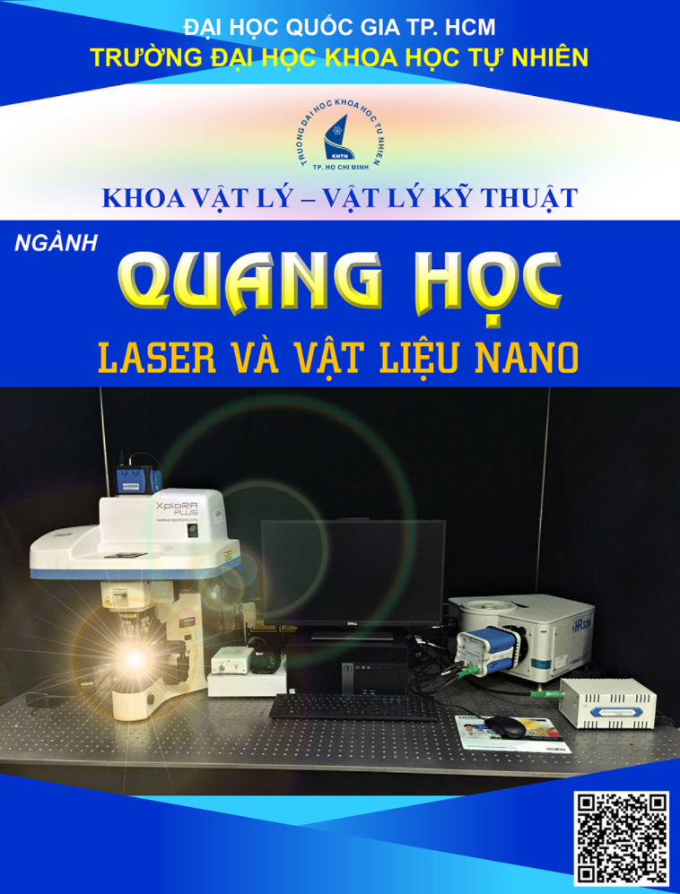

Chương trình đào tạo Tiến sĩ ngành Quang học là một trong 5 chương trình đào tạo Tiến sĩ của khoa Vật lý - Vật lý Kỹ thuật, trường Đại học Khoa học Tự nhiên, ĐHQG TP. HCM (Quang học, Vật lý Lý thuyết và Vật lý Toán, Vật lý Nguyên tử và Hạt nhân, Vật lý Chất rắn, Vật lý Địa cầu). Các nghiên cứu sinh ngành Quang học sẽ được học tập, làm thực nghiệm và nghiên cứu tại bộ môn Vật lý Ứng dụng và các phòng thí nghiệm, trung tâm, viện có liên kết hợp tác.

CHƯƠNG TRÌNH ĐÀO TẠO TIẾN SĨ NGÀNH QUANG HỌC
1. Kiến thức chungĐào tạo nguồn nhân lực có chất lượng cao trong lĩnh Quang - Quang phổ và các ứng dụng của quang học. Học viên sau khi tốt nghiệp tiến sĩ chuyên ngành Quang học có đủ kiến thức chuyên sâu trong lãnh vực quang học; có khả năng nghiên cứu độc lập và trở lãnh thành các cán bộ nghiên cứu chủ chốt trong các lãnh vực quang học và các ngành liên quan. Học viên tốt nghiệp có thể làm việc trong các tổ chức quốc tế liên quan, các viện nghiên cứu, hoặc giảng dạy trong các trường đại học và cao đẳng,….Nghiên cứu sinh được trang bị những kiến thức và kỹ năng sau:
2. Kiến thức chuyên môni. Các kiến thức về Quang học - Quang phổ - Laser
Nắm vững và vận dụng các kiến thức về quang và quang phổ nguyên tử, quang phổ phân tử: Hấp thu hồng ngoại, Raman, công nghệ photonics, laser,... Áp dụng vào lãnh vực nghiên cứu cụ thể cho từng luận án.
ii. Kiến thức về màng mỏng và vật liệu nano
Nắm vững công nghệ chế tạo màng mỏng và các vật liệu nano bằng các phương pháp như phún xạ magnetron, PLD, solgel, phương pháp hóa lý…. Các phương pháp đo hiện đại XRD, XPS, EDX SEM, TEM, AFM, các phép đo quang điện … để phân tích và đánh giá các vật liệu cần nghiên cứu.
iii. Lập trình mô phỏng và tính toán
Sử dụng thành thạo các thuật toán mô phỏng, tự tìm hiểu và nắm được các phần mềm nghiên cứu liên quan, có khả năng tự lập trình giải quyết các vấn đề bằng ngôn ngữ Matlab, C++, Java, C#….
3. Yêu cầu về kỹ năng3.1. Kỹ năng mềm
Kỹ năng giao tiếp, ứng xử; kỹ năng giao tiếp ngoại ngữ; các kỹ năng có được thông qua các giờ học tập trên lớp, thực tập thực tế, quá trình nghiên cứu tại phòng thí nghiệm.
3.2. Kỹ năng cứng
- Các kỹ năng thực hành và nghiên cứu khoa học tại phòng thí nghiệm.
- Các kỹ năng làm việc độc lập và làm việc theo nhóm, ứng dụng thực tế, báo cáo các seminar, tham dự hội thảo, viết luận án, viết báo khoa học…
3.3. Kỹ năng ngoại ngữ
Theo quy chế đào tạo trình độ Tiến sĩ do ĐHQG-TPHCM ban hành
4. Thái độ xã hội - Chấp hành luật pháp, chủ trương của Đảng và nhà nước.
- Có đạo đức nghề nghiệp, có tinh thần cầu tiến, biết tiếp thu cái mới và có tinh thần học hỏi nâng cao hiệu quả công tác và trình độ chuyên môn.
- Có lý tưởng sống vì sự phát triển công đồng và đất nước.
- Trân trọng và phát huy truyền thống giáo dục và nghiên cứu tốt đẹp của khoa và bộ môn.
- Có khả năng nghiên cứu độc lập, chủ trì các nghiên cứu chuyên sâu.
- Hướng dẫn và đào tạo các học viên thạc sĩ và sinh viên nghiên cứu khoa học.
- Đi du học ở các nước phát triển và mạnh về lĩnh vực quang học hoặc các lĩnh vực tương đương.
Học tiếp và nghiên cứu mở rộng sau tiến sĩ tại các trường ĐH trong và ngoài nước.
KHUNG CHƯƠNG TRÌNH ĐÀO TẠO TIẾN SĨ NGÀNH QUANG HỌC
| STT | Mã học phần | Tên học phần | Số tin chỉ | |
| Lý thuyết | Thực hành | |||
| A. | Ngành: Quang Học | |||
|
1. |
DVL001 |
Cấu trúc bán dẫn lượng tử - LED & OLED |
2 |
1 |
|
2. |
DVL002 |
Mô phỏng sự phát triển cấu trúc của vật liệu màng mỏng |
1 |
2 |
|
3. |
DVL003 |
Vật liệu quang xúc tác và ứng dụng |
2 |
1 |
|
4. |
DVL004 |
Các phương pháp tổng hợp nano |
2 |
1 |
|
5. |
DVL005 |
Ứng dụng quang phổ để nghiên cứu tính chất điện quang của vật liệu |
2 |
1 |
|
6. |
DVL006 |
Các hệ quang phi tuyến |
2 |
1 |
|
7. |
DVL007 |
Thiết kế các hệ quang học |
2 |
1 |
|
8. |
DVL008 |
Ứng dụng màng dẫn điện trong suốt trong các thiết bị quang điện |
2 |
1 |
|
9. |
DVL009 |
Phương pháp nghiên cứu và công nghệ chế tạo vật liệu màng mỏng hiện đại |
2 |
1 |
|
10. |
DVL010 |
Phương pháp nghiên cứu và công nghệ chế tạo vật liệu quang điện để ứng dụng làm vật liệu quang xúc tác và pin mặt trời. |
2 |
1 |
|
11. |
DVL011 |
Vật liệu quang hoạt và ứng dụng |
2 |
1 |